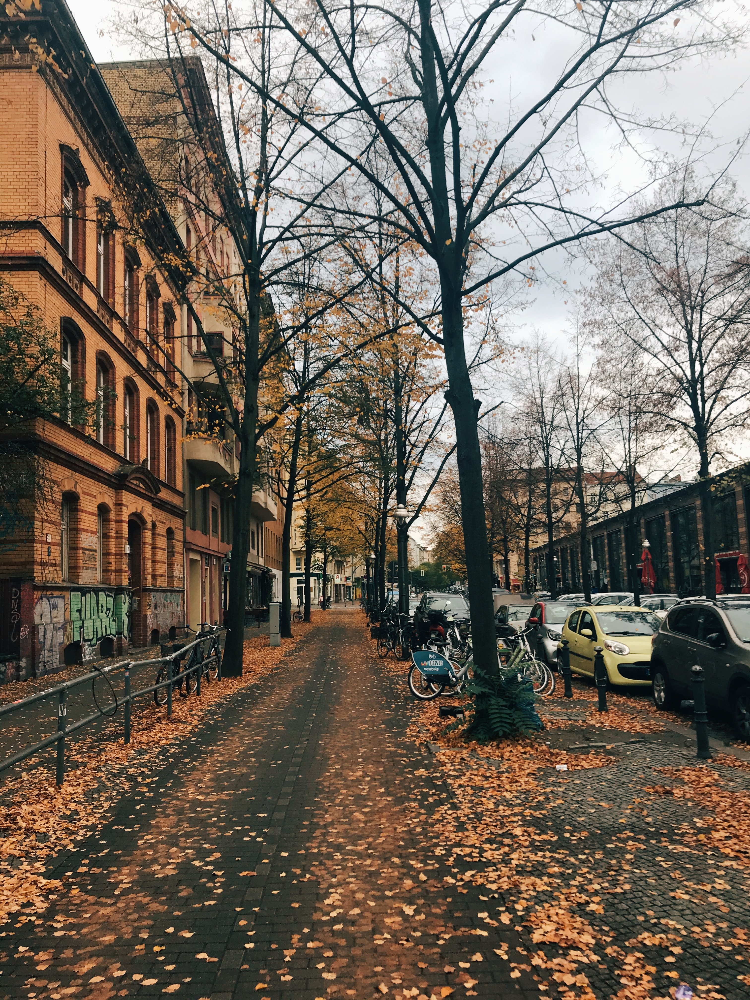

수필은 청자 연적이다. 청초하고 몸맵시 날렵한 여인이다. 수필은 그 여인이 걸어가는 숲속으로 난 평탄하고 고요한 길이다. 수필은 가로수 늘어진 페이브먼트가 될 수도 있다. 그러나, 그 길은 꺠끗하고 사람이 적게 다니는 주택가에 있다.
수필은 청춘의 글은 아니요, 서른여섯 살 중년 고개를 넘어선 사람의 글이며, 정열이나 심오한 지성을 내포한 문학이 아니요, 그저 수필가가 쓴 단순한 글이다.
수필은 흥미는 주지마는 읽는 사람을 흥분시키지는 아니한다. 수필은 마음의 산책이다. 그 속에는 인생의 향취와 여운이 숨어 있는 것이다.
수필의 색깔은 황홀 찬란하거나 진하지 아니하며, 검거나 희지 않고 퇴락하여 추하지 않고, 언제나 온아우미하다. 수필의 빛은 비둘기빛이거나 진주빛이다. 수필이 비단이라면 번쩍거리지 않는 바탕에 약간의 무늬가 있는 것이다. 그 무늬는 읽는 사람의 얼굴에 미소를 띠게 한다.
수필은 한가하면서도 나태하지 아니하고, 속박을 벗어나고서 산만하지 않으며, 찬란하지 않고 우아하며 날카롭지 않으나 산뜻한 문학이다
수필의 재료는 생활 경험, 자연 관찰, 또는 사회 현상에 대한 새로운 발견, 무엇이나 다 좋을 것이다. 그 제재가 무엇이든지 간에 쓰는 이의 독특한 개성과 그때의 무드에 따라 '누에의 입에서 나오는 액이 고치를 만들 듯이' 수필은 씌어지는 것이다. 수필은 플롯이나 클라이맥스를 필요로 하지 않는다. 가고싶은 대로 가는 것이 수필의 행로이다. 그러나 차를 마시는 거와 같은 이 문학은 그 방향을 갖지 아니할 때에는 수돗물같이 무미한 것이 되어 버리는 것이다.
수필은 독백이다. 소설가나 극작가는 때로 여러 가지 성격을 가져 보아야 된다. 셰익스피어는 햄릿도 되고 폴로니어스 노릇도 한다. 그러나 수필가 램은 언제나 찰스램이면 되는 것이다. 수필은 그 쓰는 사람을 가장 솔직히 나타내는 문학 형식이다. 그러므로 수필은 독자에게 친밀감을 주며, 친구에게서 받은 편지와도 같은 것이다.
덕수궁 박물관에 청자 연적이 하나 있었다. 내가 본 그 연적은 연꽃 ㅗ양을 한 것으로, 똑같이 생긴 꽃잎들이 정연히 달려 있었는데, 다만 그중에 꽃잎 하나만이 약간 옆으로 꼬부라졌었다. 이 군형 속에 있는 눈에 거슬리지 않는 파격이 수필인가 한다. 한조각 연꽃잎을 꼬부라지게 하기에는 마음의 여유를 필요로 한다.
이 마음의 여유가 없어 수필을 못 쓰는 것은 슬픈 일이다. 떄로는 억지로 마음의 여유를 가지려 하다가도 그런 여유를 갖는 것이 죄스러운 것 같기도 하여 나의 마지막 10분의 1 까지도 숫제 초조와 번잡에 다 주어 버리는 것이다